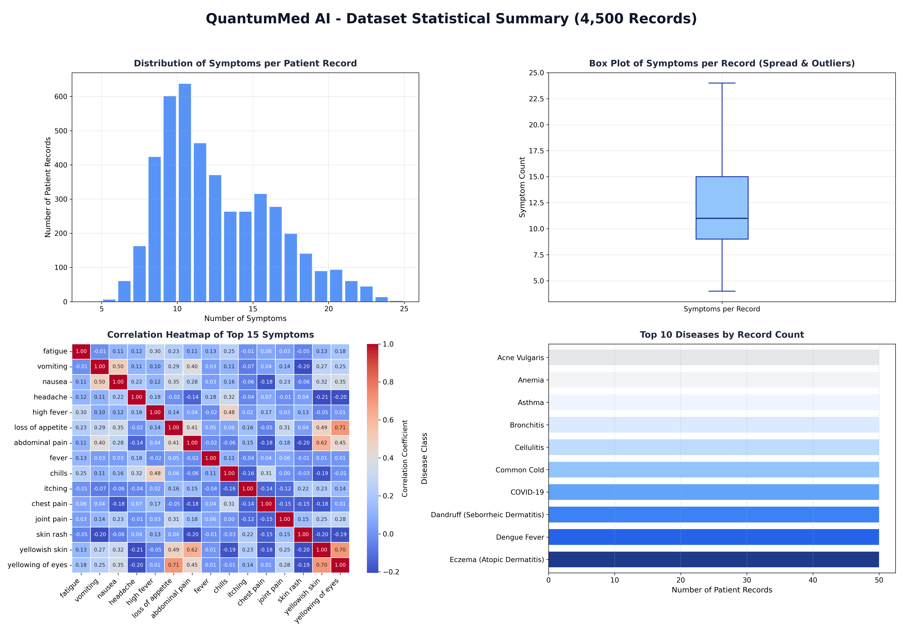
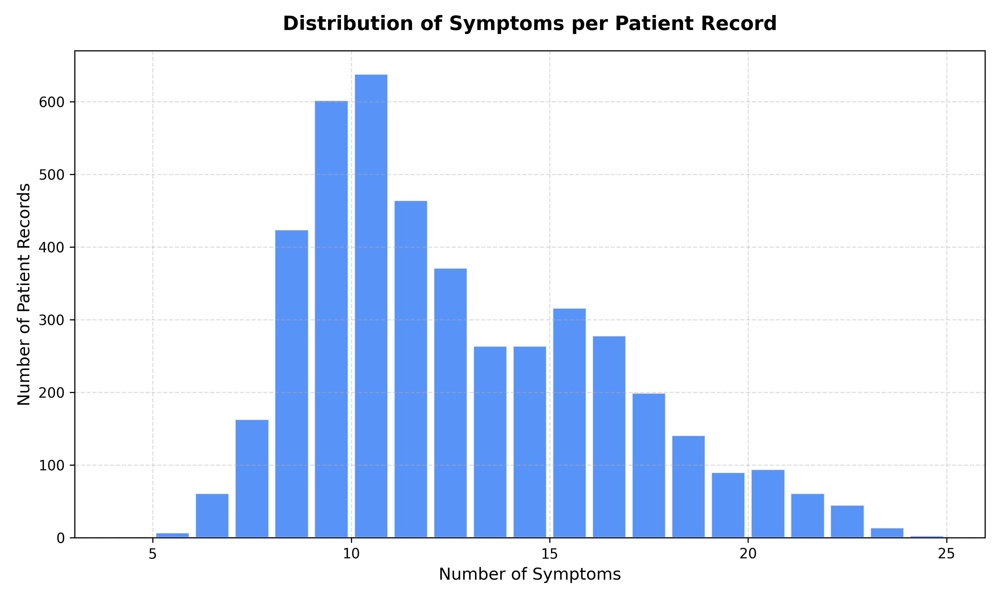
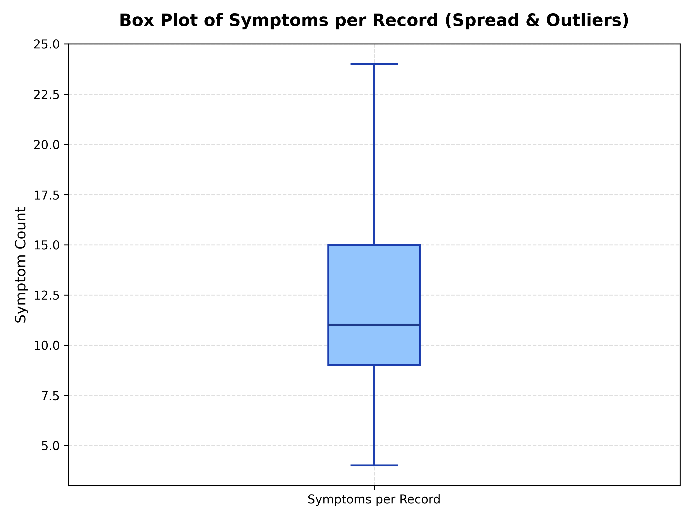
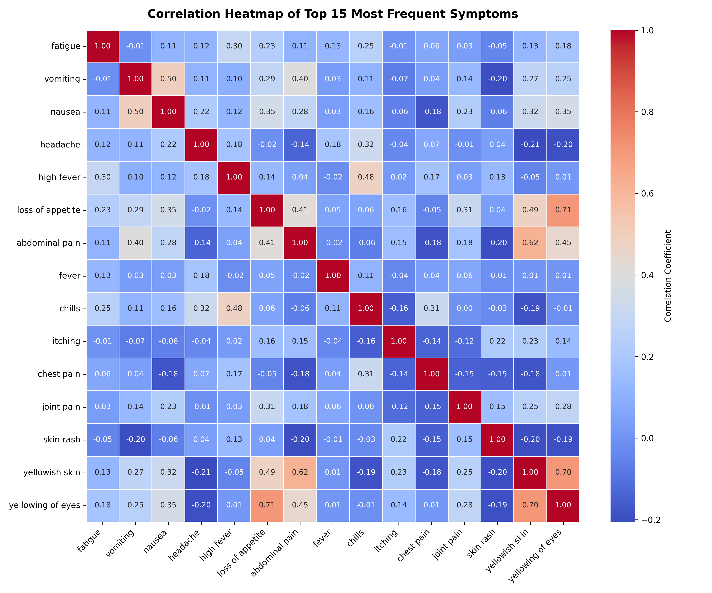
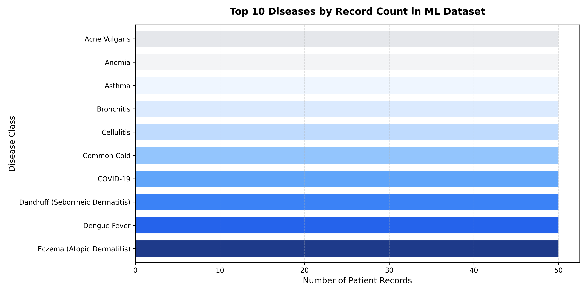

Combined Analytics Sheet (All Graphs Grid)

1. Distribution of Symptoms per Patient Record

2. Spread and Outliers (Symptom Counts)

3. Correlation Heatmap (Top 15 Symptoms Relationship)

4. Top 10 Diseases by Record Count
